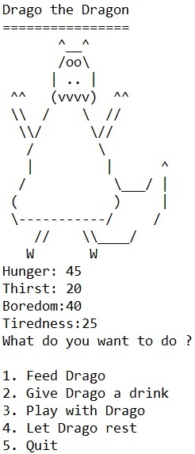
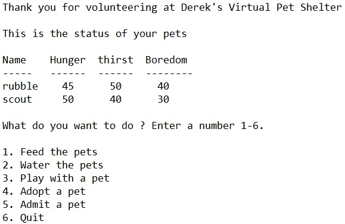

Bio
My name is Derek Anderson. I am currently attending an intense boot camp to learn java and full stack software development. I wanted to enhance my skills and I wanted a software development background as a foundation. Formerly, I worked for a hardware/software vendor where I supported enterprise systems and system administrators. I was limited to certain technologies and I wanted to learn more. I’d like to use my problem solving background and newly acquired development background to collaborate with others and pursue a career in software development.
Skills
- Java
- Spring
- Javascript
- jquery
- HTML5
- CSS3
- Boostrap
- MVC
- SQL
- MSQL
- Object Oriented Programming
- Git
Virtual Pet
Meet Drago the Dragon. Drago is a Virtual Pet. You may feed him, play with him, give him water and he sometimes needs rest. Once Drago's needs reach 50 he will start to need more attention. Drago has a mind of his own sometimes so he may feed himself, drink, entertain himself, or take a nap. Lastly, be careful when any of Drago's needs get close to 100. If you wait too long to address them he can tragically pass away. There is a lot displayed on the console after time advances so you may need to scroll up to see all the details.

Virtual Pet Shelter
Welcome to the VirtualPet Shelter App. The shelter allows a user to select to feed all the pets in the shelter and give water to all pets in the shelter. In addition, the user may enter a single pet, play with a single pet in the shelter, and feed a single pet in the shelter. The status of the pets will update accordingly based on the interaction from the user. A user may also adopt a pet currently living in the shelter or admit a new pet to the shelter.
